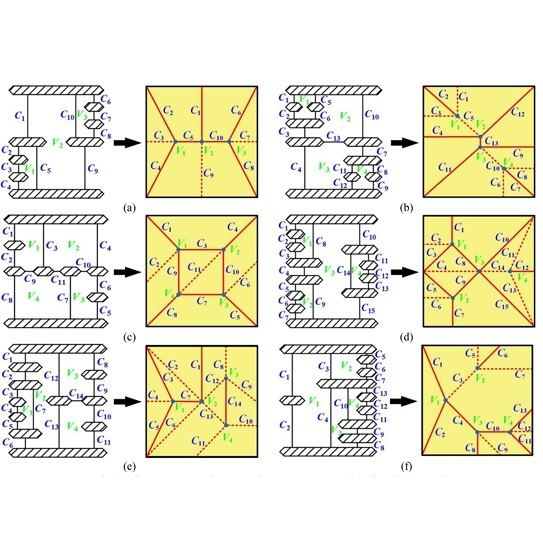

A Reconfigurable Parallel Dexterous Hand Robot H. Li, Chunxu Tian, B. Wang and D. Zhang Invention Patent 2025103775113 Year: 2025
[Link]
Optimal design of a generalized single-loop parallel manipulator with RCM characteristic considering motion/force transmissibility L. Li, Chunxu Tian, Z. Xia and D. Zhang Robotica Pages 1-17 Year: 2025
[Link]
The novel synthesis method of decoupled generalized parallel mechanisms based on motion transmission Z. Xia, Chunxu Tian, Y. Xing, J. Gu, L. Li and D. Zhang Mechanism and Machine Theory Vol. 210 Pages 106019 Year: 2025
[Link]
The novel synthesis of generalized parallel manipulators with 8R Kirigami-inspired configurable platform Y. Xing, Chunxu Tian, Z. Xia, J. Gu and D. Zhang Mechanism and Machine Theory Vol. 209 Pages 106003 Year: 2025
[Link]
A family of generalized single-loop RCM parallel mechanisms: structure synthesis, kinematic model, and case study L. Li, D. Zhang, Chunxu Tian Mechanism and Machine Theory Vol. 195, Article 105606 Year: 2024
[Link]
An Integrated Bionic Robotic Ankle Transmission Device G. Yuan, Chunxu Tian, J. Li and Y. Liu Invention Patent 202420743833.6 Year: 2024
[Link]
Grinding Visualization Rendering Method, System, Device, and Storage Medium for Surgical Navigation D. Zhang, J. Liu, Z. Huang and Chunxu Tian Invention Patent 202411037487.0 Year: 2024
[Link]
A Low-Inertia Bionic Robot Walking Parallel Mechanism and Walking Method Chunxu Tian, F. Gan, G. Yuan, C. Wang, C. Yuan and S. Jiang Invention Patent CN202410251126.X Year: 2024
[Link]
A virtual parallel model for the buffer landing of multi-legged landing gear J. Liu, D. Zhang, Chunxu Tian, W. Ma, Z. Xia Mechanism and Machine Theory Vol. 200, Article 105724 Year: 2024
[Link]
Femur Prosthesis Model Pose Initialization Method, System, Equipment and Storage Medium D. Zhang, J. Liu, Z. Huang and Chunxu Tian Invention Patent CN118924498A Year: 2024
[Link]

The novel synthesis of origami-inspired mechanisms based on graph theory Z. Xia, Chunxu Tian, L. Li and D. Zhang Mechanism and Machine Theory Vol. 192 Pages 105547 Year: 2024
[Link]
The novel synthesis of mechanisms for continuous origami based on the topological graph theory Z. Xia, Chunxu Tian, L. Li and D. Zhang Mechanism and Machine Theory Vol. 204 Pages 105857 Year: 2024
[Link]
MOPARAS: A Modular Parallel Spherical Robot with Position-Adjustable Connectors J. Gu, T. Lam, Chunxu Tian, L. Li, Z. Xia, D. Zhang International Conference on Intelligent Robotics and Applications Pages 363-376 Year: 2024
[Link]
Research on the Structure Design Based on Cable Driven and Bounding Control Method of a Quadruped Robot with Double-Joint Spine J. Ma, Chunxu Tian, L. Li, D. Zhang Journal of Fudan University (Natural Sciences) Vol. 63, No. 6, Pages 711-723 Year: 2024
[Link]
Analysis of the Velocity of Two-Layer Generalized Parallel Manipulators Chunxu Tian, Z. Huang, H. Li, F. Chen 2024 IEEE International Conference on Mechatronics and Automation (ICMA) Pages 1694-1699 Year: 2024
[Link]
The novel synthesis of reconfigurable generalized parallel manipulators with kinematic redundancy Chunxu Tian, Z. Xia, L. Li, D. Zhang Mechanism and Machine Theory Vol. 201, Article 105748 Year: 2024
[Link]
A Novel Class of (3+2)-DOF Reconfigurable Generalized Parallel Mechanisms with Kinematic Redundancy Chunxu Tian, L. Li, Z. Xia, D. Zhang Mechanism and Machine Science. IFToMM WC 2023 Vol. 130, Pages 386-395 Year: 2023
[Link]
A Design and Prototype Verification of an Active Diameter-Varying Pipeline Inspection Robot W. Ma, D. Zhang, J. Liu, Chunxu Tian and Z. Xia Journal of Fudan University (Natural Sciences) Vol. 62, No. 5, Pages 627-636 Year: 2023
[Link]
Graph Synthesis of Generalized Parallel Mechanisms with Coupling Sub-chains Chunxu Tian, L. Li, Z. Xia, D. Zhang Intelligent Robotics and Applications. ICIRA 2023 Pages 76-87 Year: 2023
[Link]
A novel 6 DOFs generalized parallel manipulator design and analysis based on humanoid leg Z. Xia, D. Zhang, Y. Chen, Chunxu Tian, J. Liu, C. Wu Mechanism and Machine Theory Vol. 176, Article 105029 Year: 2022
[Link]
A Four-Degree-of-Freedom Parallel Robot Chunxu Tian and D. Zhang Invention Patent CN202110517068.7 Year: 2022
[Link]
A Five-degree-of-freedom Parallel Mechanism with Large Rotation Angle Chunxu Tian, W. Ma, J. Ma and D. Zhang Invention Patent CN114406729B Year: 2022
[Link]
A method for comprehensive performance optimization of four-leg landing gear based on the virtual equivalent parallel mechanism H. Tang, D. Zhang, Chunxu Tian Mechanism and Machine Theory Vol. 174, Article 104924 Year: 2022
[Link]
An Approach for Modeling and Performance Analysis of Three-Leg Landing Gear Mechanisms Based on the Virtual Equivalent Parallel Mechanism H. Tang, D. Zhang, Chunxu Tian Mechanism and Machine Theory Vol. 169, Article 104617 Year: 2022
[Link]
A Parallel Robot Chunxu Tian, J. Ma, W. Ma, J. Gu and D. Zhang Invention Patent CN202210112092.7 Year: 2022
[Link]
End-to-end SAR Ship Detection Method and System Y. Chen, Z. Xia Zhihao, Chunxu Tian, J. Liu, C. Wu Chenwei and D. Zhang Invention Patent CN114581755B Year: 2022
[Link]
Multi-Functional UAV undercarriage and UAV Chunxu Tian, D. Zhang and W. Ma Invention Patent CN113086173B Year: 2022
[Link]
A multi-finger robot system for adaptive landing gear and aerial manipulation J. Liu, D. Zhang, C. Wu, H. Tang, Chunxu Tian Robotics and Autonomous Systems Vol. 146, Article 103878 Year: 2021
[Link]
A Novel Terrain Adaptive Landing Gear Robot H. Tang, Chunxu Tian, D. Zhang Journal of Physics Conference Series Vol. 1924, Article 012021 Year: 2021
[Link]
Structure synthesis of reconfigurable generalized parallel mechanisms with configurable platforms Chunxu Tian, D. Zhang, H. Tang, C. Wu Mechanism and Machine Theory Vol. 160, Article 104281 Year: 2021
[Link]
Reconfigurable Generalized Parallel Mechanisms with Kinematotropic Linkages Chunxu Tian, D. Zhang, H. Tang, J. Liu 2021 7th International Conference on Mechatronics and Robotics Engineering (ICMRE) Pages 185-189 Year: 2021
[Link]
Design and analysis of novel kinematically redundant reconfigurable generalized parallel manipulators Chunxu Tian, D. Zhang Mechanism and Machine Theory Vol. 166, Article 104481 Year: 2021
[Link]
A Reconfigurable Parallel Robot Mechanism with Three Relative Degrees of Freedom Chunxu Tian, Y. Fang, H. Lin and S. Guo Invention Patent CN107498540B Year: 2020
[Link]
A new family of generalized parallel manipulators with configurable moving platforms Chunxu Tian, D. Zhang Mechanism and Machine Theory Vol. 153, Article 103997 Year: 2020
[Link]
A novel class of generalized parallel manipulators with high rotational capability Chunxu Tian, D. Zhang, J. Liu Proceedings of the Institution of Mechanical Engineers, Part C Journal of Mechanical Engineering Science Vol. 234, No. 23, Pages 4599-4619 Year: 2020
[Link]
Design and analysis of a partially decoupled generalized parallel mechanism for 3T1R motion Chunxu Tian, Y. Fang, Q. J. Ge Mechanism and Machine Theory Vol. 140, Pages 211-232 Year: 2019
[Link]
Structural Synthesis and Performance Study of Generalized Parallel Mechanisms Chunxu Tian Thesis of Doctoral Degree Pages 1-145 Year: 2019
[Link]
A Reconfigurable Parallel Mechanism with Five-Bar Kinematic Chains Chunxu Tian, Y. Fang, S. Guo and H. Qu Invention Patent CN105751202B Year: 2018
[Link]
Structure synthesis of reconfigurable parallel mechanisms with closed-loop metamorphic linkages Chunxu Tian, Y. Fang, S. Guo, H. Qu Proceedings of the Institution of Mechanical Engineers, Part C Journal of Mechanical Engineering Science Vol. 232, No. 7, Pages 1303-1316 Year: 2018
[Link]
Structural synthesis of a class of two-loop generalized parallel mechanisms Chunxu Tian, Y. Fang, Q. J. Ge Mechanism and Machine Theory Vol. 128, Pages 429-443 Year: 2018
[Link]
New Kinematic Structures for Two-Loop Generalized Parallel Mechanism Designs Chunxu Tian, Y. Fang, Q. J. Ge 2018 IEEE International Conference on Robotics and Automation (ICRA) Pages 956-961 Year: 2018
[Link]
Structural synthesis of parallel manipulators with coupling sub-chains Chunxu Tian, Y. Fang, Q. J. Ge Mechanism and Machine Theory Vol. 118, Pages 84-99 Year: 2017
[Link]
A class of reconfigurable parallel mechanisms with five-bar metamorphic linkage Chunxu Tian, Y. Fang, S. Guo, H. Qu Proceedings of the Institution of Mechanical Engineers, Part C Journal of Mechanical Engineering Science Vol. 231, No. 11, Pages 2089-2099 Year: 2017
[Link]
Structural synthesis of a class of 2R2T hybrid mechanisms Chunxu Tian, Y. Fang, S. Guo Chinese Journal of Mechanical Engineering Vol. 29, No. 4, Pages 703-709 Year: 2016
[Link]
Optimization of the motion performanceof planar five-bar linkage using a genetic algorithm G. Huang, Y. Fang, H. Qu, Chunxu Tian Journal of Beijing Jiaotong University Vol. 39, No. 4, Pages 44-49 Year: 2015
[Link]
 A Reconfigurable Parallel Dexterous Hand Robot
A Reconfigurable Parallel Dexterous Hand Robot Optimal design of a generalized single-loop parallel manipulator with RCM characteristic considering motion/force transmissibility
Optimal design of a generalized single-loop parallel manipulator with RCM characteristic considering motion/force transmissibility The novel synthesis method of decoupled generalized parallel mechanisms based on motion transmission
The novel synthesis method of decoupled generalized parallel mechanisms based on motion transmission The novel synthesis of generalized parallel manipulators with 8R Kirigami-inspired configurable platform
The novel synthesis of generalized parallel manipulators with 8R Kirigami-inspired configurable platform A family of generalized single-loop RCM parallel mechanisms: structure synthesis, kinematic model, and case study
A family of generalized single-loop RCM parallel mechanisms: structure synthesis, kinematic model, and case study A virtual parallel model for the buffer landing of multi-legged landing gear
A virtual parallel model for the buffer landing of multi-legged landing gear The novel synthesis of mechanisms for continuous origami based on the topological graph theory
The novel synthesis of mechanisms for continuous origami based on the topological graph theory MOPARAS: A Modular Parallel Spherical Robot with Position-Adjustable Connectors
MOPARAS: A Modular Parallel Spherical Robot with Position-Adjustable Connectors Research on the Structure Design Based on Cable Driven and Bounding Control Method of a Quadruped Robot with Double-Joint Spine
Research on the Structure Design Based on Cable Driven and Bounding Control Method of a Quadruped Robot with Double-Joint Spine Analysis of the Velocity of Two-Layer Generalized Parallel Manipulators
Analysis of the Velocity of Two-Layer Generalized Parallel Manipulators The novel synthesis of reconfigurable generalized parallel manipulators with kinematic redundancy
The novel synthesis of reconfigurable generalized parallel manipulators with kinematic redundancy A Novel Class of (3+2)-DOF Reconfigurable Generalized Parallel Mechanisms with Kinematic Redundancy
A Novel Class of (3+2)-DOF Reconfigurable Generalized Parallel Mechanisms with Kinematic Redundancy A Design and Prototype Verification of an Active Diameter-Varying Pipeline Inspection Robot
A Design and Prototype Verification of an Active Diameter-Varying Pipeline Inspection Robot Graph Synthesis of Generalized Parallel Mechanisms with Coupling Sub-chains
Graph Synthesis of Generalized Parallel Mechanisms with Coupling Sub-chains A novel 6 DOFs generalized parallel manipulator design and analysis based on humanoid leg
A novel 6 DOFs generalized parallel manipulator design and analysis based on humanoid leg A method for comprehensive performance optimization of four-leg landing gear based on the virtual equivalent parallel mechanism
A method for comprehensive performance optimization of four-leg landing gear based on the virtual equivalent parallel mechanism An Approach for Modeling and Performance Analysis of Three-Leg Landing Gear Mechanisms Based on the Virtual Equivalent Parallel Mechanism
An Approach for Modeling and Performance Analysis of Three-Leg Landing Gear Mechanisms Based on the Virtual Equivalent Parallel Mechanism End-to-end SAR Ship Detection Method and System
End-to-end SAR Ship Detection Method and System A multi-finger robot system for adaptive landing gear and aerial manipulation
A multi-finger robot system for adaptive landing gear and aerial manipulation A Novel Terrain Adaptive Landing Gear Robot
A Novel Terrain Adaptive Landing Gear Robot Structure synthesis of reconfigurable generalized parallel mechanisms with configurable platforms
Structure synthesis of reconfigurable generalized parallel mechanisms with configurable platforms Reconfigurable Generalized Parallel Mechanisms with Kinematotropic Linkages
Reconfigurable Generalized Parallel Mechanisms with Kinematotropic Linkages Design and analysis of novel kinematically redundant reconfigurable generalized parallel manipulators
Design and analysis of novel kinematically redundant reconfigurable generalized parallel manipulators A new family of generalized parallel manipulators with configurable moving platforms
A new family of generalized parallel manipulators with configurable moving platforms A novel class of generalized parallel manipulators with high rotational capability
A novel class of generalized parallel manipulators with high rotational capability Design and analysis of a partially decoupled generalized parallel mechanism for 3T1R motion
Design and analysis of a partially decoupled generalized parallel mechanism for 3T1R motion Structural Synthesis and Performance Study of Generalized Parallel Mechanisms
Structural Synthesis and Performance Study of Generalized Parallel Mechanisms Structure synthesis of reconfigurable parallel mechanisms with closed-loop metamorphic linkages
Structure synthesis of reconfigurable parallel mechanisms with closed-loop metamorphic linkages Structural synthesis of a class of two-loop generalized parallel mechanisms
Structural synthesis of a class of two-loop generalized parallel mechanisms New Kinematic Structures for Two-Loop Generalized Parallel Mechanism Designs
New Kinematic Structures for Two-Loop Generalized Parallel Mechanism Designs Structural synthesis of parallel manipulators with coupling sub-chains
Structural synthesis of parallel manipulators with coupling sub-chains A class of reconfigurable parallel mechanisms with five-bar metamorphic linkage
A class of reconfigurable parallel mechanisms with five-bar metamorphic linkage Structural synthesis of a class of 2R2T hybrid mechanisms
Structural synthesis of a class of 2R2T hybrid mechanisms Optimization of the motion performanceof planar five-bar linkage using a genetic algorithm
Optimization of the motion performanceof planar five-bar linkage using a genetic algorithm